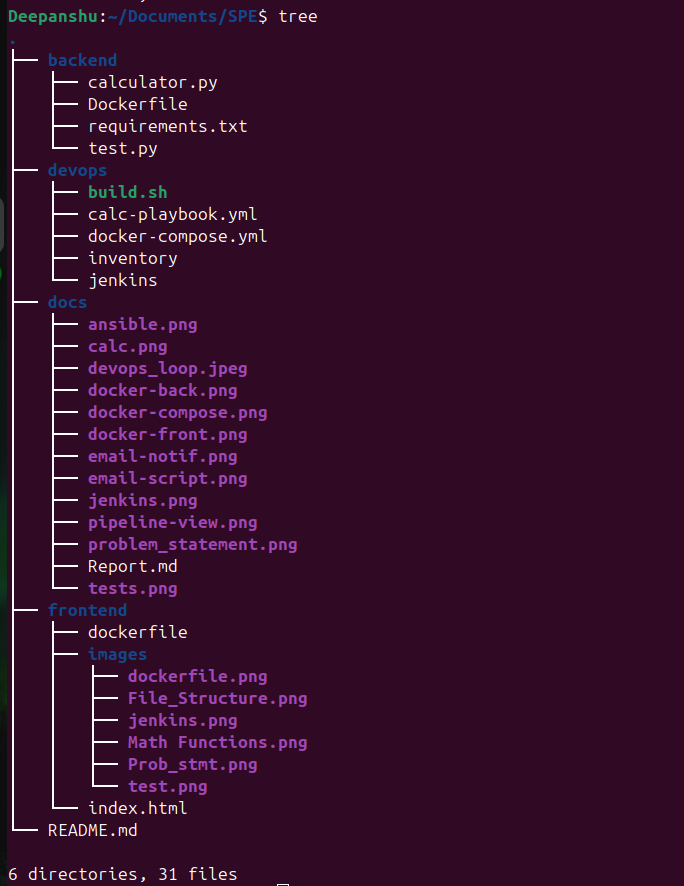
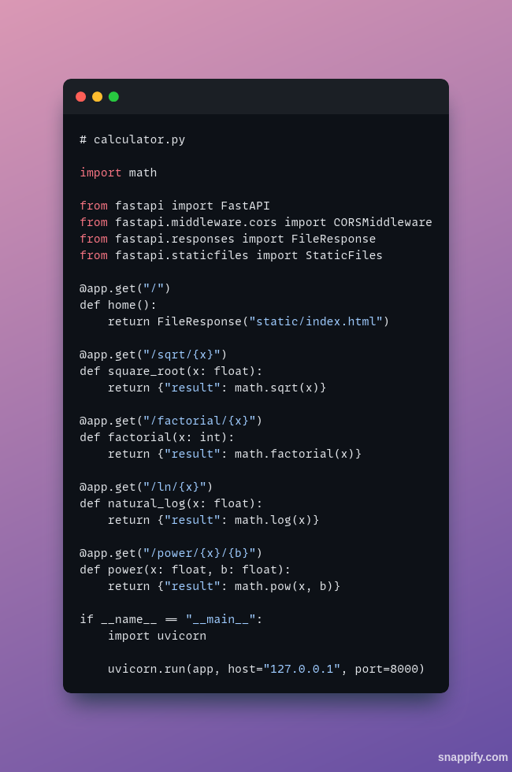
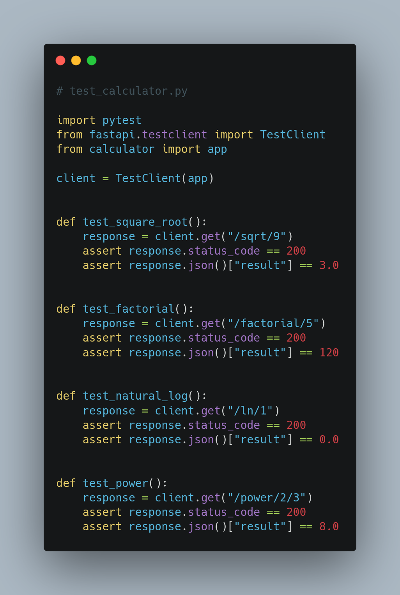
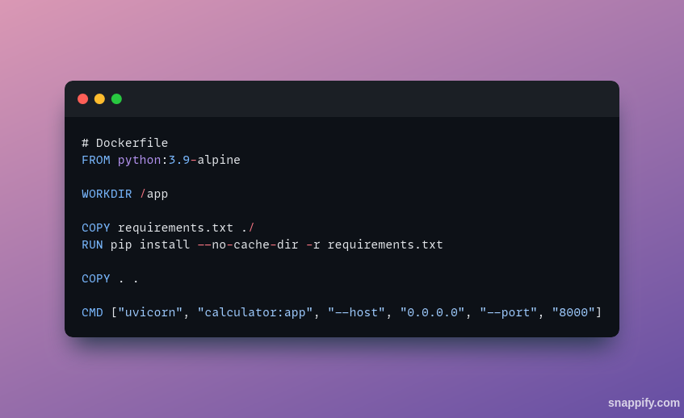
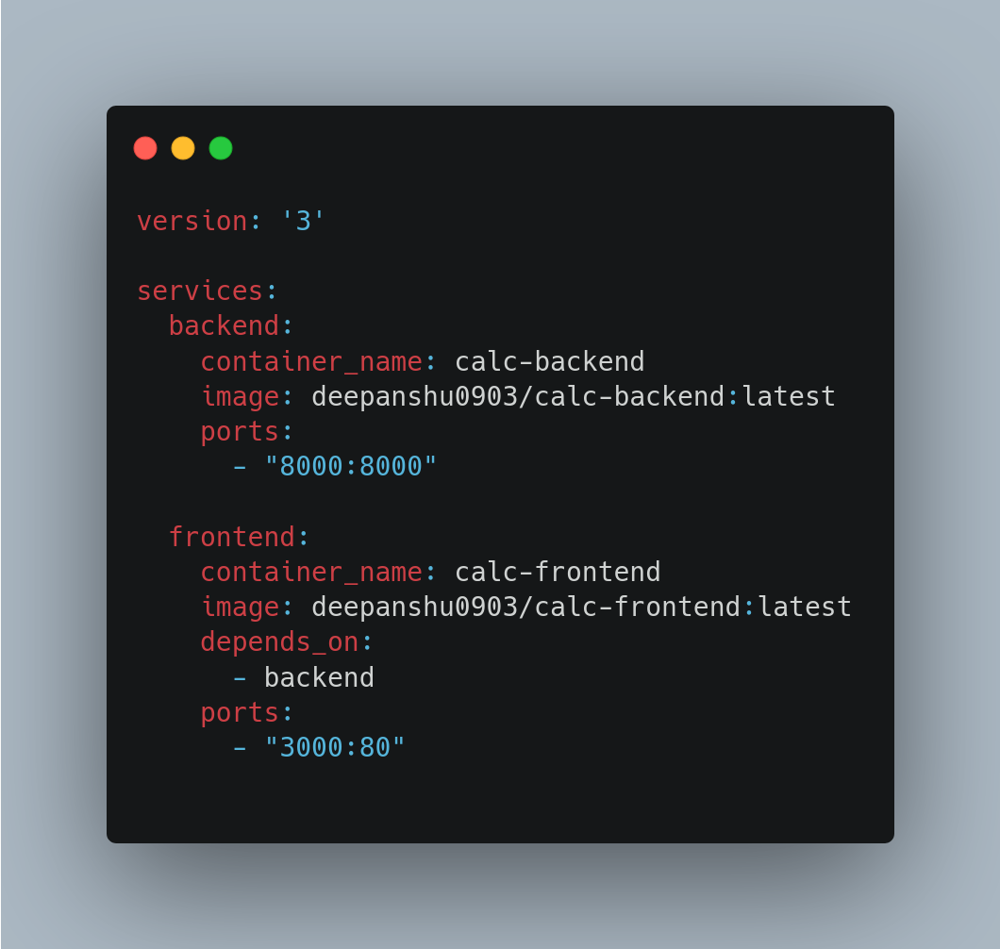
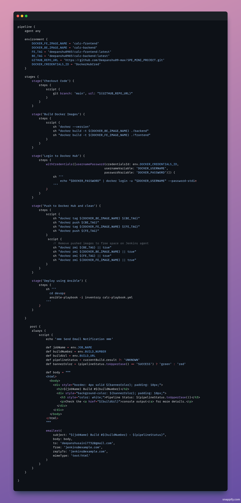
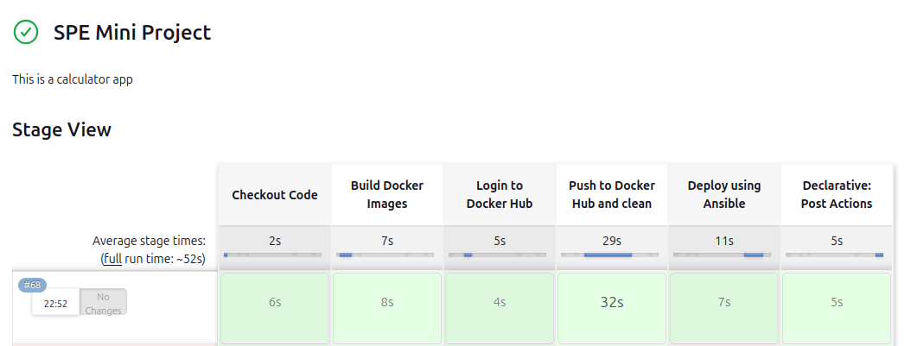

title: "SPE Miniproject Report" author: "MT2024039 Deepanshu Saini"
More details about the problem statement can be found in this document.
What is DevOps
DevOps is a set of practices, tools, and cultural philosophies that automate and integrate processes between software development and IT operations teams. Its primary goal is to deliver high-quality software faster and more reliably through collaboration, automation, and continuous improvement.
Main Aspects of DevOps
- Collaboration and Communication: DevOps fosters a culture where development, operations, and other stakeholders (like QA and security teams) work together from the start of a project.
- Shared Responsibility: Everyone involved takes collective responsibility for the entire lifecycle of the application, from development to deployment and maintenance.
- Continuous Integration (CI): Automating the process of integrating code changes into a shared repository, ensuring that new code is automatically built and tested.
- Continuous Delivery/Deployment (CD): Automating the release process to deploy code changes quickly and safely to production or staging environments.
- Version Control Systems: Systems like Git are the backbone of modern DevOps, providing a way to track changes, collaborate on code, and manage releases.
This approach bridges the gap between Development and Operations, leveraging each team’s strengths. The entire team works across the application lifecycle, illustrated by the loop diagram below:

Why DevOps?
Some key benefits of DevOps relevant to our project:
- Faster and Better Product Delivery: Enables safe agility and rapid iteration.
- Faster Issue Resolution: Automated CI pipelines and user-friendly tooling reduce the manual overhead of debugging.
- Greater Automation: Minimizes repetitive tasks, like manual pushing to package managers or running tests locally.

backend/Calculator.py contains the Python code for the calculator’s logic.devops/ holds essential DevOps artifacts (e.g., Jenkinsfile, calc-playbook.yml, docker-compose.yml, etc.).Dockerfile files define how to containerize the backend and frontend.calc-playbook.yml and inventory manage local or remote deployment via Ansible.
Key aspects of the Python backend code: - Edge-case handling (e.g., negative numbers for square roots). - Computation of required functionalities (factorial, log, power, etc.). - Logging of inputs and outputs.

Key aspects of the test code: - Unit tests for each calculator function. - Validation of edge cases and correct results. - Execution via Pytest for quick feedback.
Clone the Repository
bash
git clone https://github.com/AryanRastogi7767/Scientific_Calculator.git
Install Required Packages
bash
pip install -r requirements.txt
Launch the FastAPI Server
bash
uvicorn calculator:app --host 0.0.0.0 --port 8000
Execute the Tests
bash
pytest test.py --tb=short --disable-warnings
 This Dockerfile creates an image for our Python-based backend application.
python:3.9-slim).8000 and runs the FastAPI/Flask server.Running the Backend Container:
docker run -d --name my-calc-back --network spe-mp -p 8000:8000 calc-backend
 This Dockerfile creates an image for our HTML-based frontend application.
This Dockerfile creates an image for our HTML-based frontend application.
nginx:alpine).HTML/CSS/JS into Nginx’s /usr/share/nginx/html.80 for serving frontend files.Running the Frontend Container:
docker run -d --name my-calc-front --network spe-mp -p 3000:80 calc-frontend

A docker-compose.yml file is used to orchestrate the backend and frontend services.
8000:8000 and 3000:80).Build and Start Containers:
docker compose build
After building the images, we push them to Docker Hub for easy deployment.
docker login -u <your-username> -p <your-password>
docker tag my-image <dockerhub-username>/<repo-name>:<tag>
docker push <dockerhub-username>/<repo-name>:<tag>

sudo apt-get update
sudo apt-get install -y openjdk-11-jdk
sudo apt-get update
sudo apt-get install -y jenkins
sudo systemctl start jenkins
sudo systemctl status jenkins
Jenkins listens on port 8080 by default. Visit http://<your-server-ip>:8080 to access the Jenkins UI.
sudo apt-get update
sudo apt-get install -y ansible
Defines target hosts.
[myservers]
192.168.1.10 ansible_user=ubuntu

Ansible playbook automates container deployment: - Pulls the latest Docker images (backend & frontend) from Docker Hub. - Runs them on a remote host. - Uses Docker tasks or Docker Compose for container management. - Jenkins triggers this after successful build and push.
Execute Playbook:
ansible-playbook -i inventory calc-playbook.yml
At the end of our Jenkins pipeline, we have an email script that automatically sends out a color-coded HTML email indicating the pipeline’s status. This script is placed in the pipeline’s post { always { ... } } block, ensuring it runs whether the build succeeds or fails. The key points are:


emailext to send emails with an HTML body.JOB_NAME and BUILD_NUMBER, then constructs an HTML message indicating success or failure.post { always { ... } } block, the email fires at the end of every run, even if earlier stages fail.Here are some final lines summarizing next steps and confirming your project is ready: 